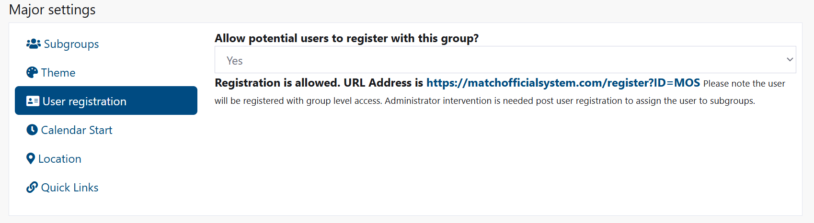
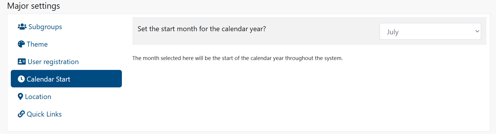
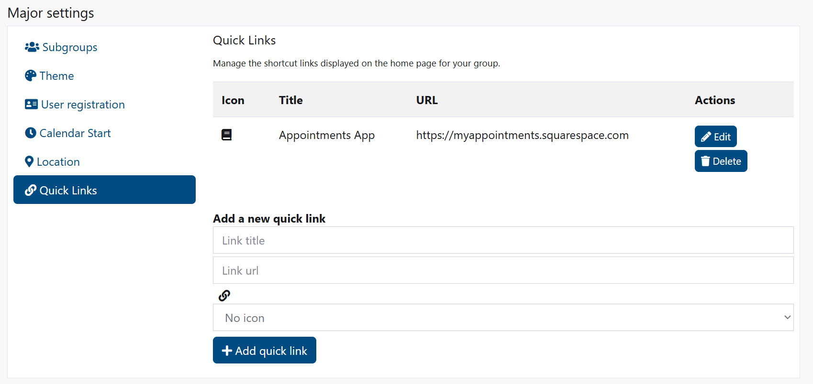
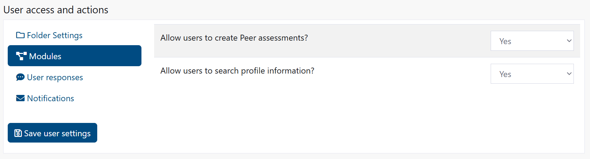

Group Settings
Access Level
Owner (Administrator)
Overview
Group Settings allows administrators to manage how your organisation operates within the Match Official System. You can control user registration, calendar dates, folder access, notification settings, and how users interact with assessments and plans.
How to Access
From the main menu, click Admin then Group Settings.
Before You Start
- You must be an administrator with the correct access level
- Changes to group settings affect all users in your group
- Some settings are destructive (such as folder deletion) and cannot be easily undone
- Your group's licence information is displayed at the top of the page
Major Settings

Subgroups
Subgroups allow you to organise users within your group. Users can be assigned to one or more subgroups for filtering, reporting, and targeted communications.
View and manage existing subgroups:
- Navigate to Group Settings
- Click the Subgroups tab
- You see a list of all subgroups in your group
- For each subgroup, you can:
- Click Edit to rename it
- Click Delete to remove it (the subgroup folder will be deleted)
- Click Recreate Folder to restore a missing folder (if folder viewing is enabled)
Add a new subgroup:
- In the Subgroups section, enter the subgroup name in the text field
- Click Add subgroup
- A new subgroup is created with its own folder
- You can now add users to this subgroup
Note
The number of subgroups you can create depends on your licence.
Theme
Select a colour theme for your group. This affects the appearance of the system for all users in your group, unless they choose their own theme in their profile settings.
Change the group theme:
- In the Major Settings section, click the Theme tab
- Click on a theme image to select it
- The system reloads and applies your new theme immediately
- All users in your group see the new theme
Requesting a new theme is possible by contacting Cortana Design.
User Registration
Control whether new users can self-register for your group. When enabled, users can request access via a registration link.

Enable or disable user registration:
- Click the User registration tab
- Select Yes to allow registration or No to disable it
- If enabled, you see a registration URL that you can share with potential users
- New users who register will have group-level access (administrators must assign them to subgroups afterwards)
Calendar Start
Set when your group's calendar year begins. This affects seasonal reporting and date filtering throughout the system.
Change the calendar start month:
- Click the Calendar Start tab
- Select your preferred starting month from the dropdown
- The selected month is now the first month of your calendar year throughout the system

Location
Set your group's default location for weather information and other location-based features.
Save location details:
- Click the Location tab
- Enter your group's location (town/city)
- Enter your postcode
- Click Save location
- Result: These details are stored and used for location-based features
Quick Links
Manage the shortcut links displayed on the home page for your group. These provide quick access to frequently used external resources.

View quick links:
- Click the Quick Links tab
- You see a table of all links currently displayed
Add a new quick link:
- In the Quick Links section, enter:
- Link title: The text users see
- Link url: The full web address (e.g., https://example.com)
- Icon: Select an icon from the dropdown (optional)
- Click Add quick link
- The link is added to the home page immediately
Edit a quick link:
- Click Edit next to the link
- Update the title, URL, or icon
- Click Update
Delete a quick link:
- Click Delete next to the link
- The link is removed from the home page
User Access and Actions
These settings control what features users can access and what actions they can perform.
Folder Settings
Control which file storage folders are available for your group. Disabling a folder will permanently delete all files within it.
Enable or disable folders:
- Click the Folder Settings tab
- For User folder: Select Yes to enable or No to disable
- For Subgroups folder: Select Yes to enable or No to disable
- Click Save user settings at the bottom of the page
Warning
Setting a folder to 'No' will delete the folder and all its contents. This is a destructive operation and data cannot be recovered.
Modules
Enable or disable specific features for users in your group.

Enable or disable peer assessments:
- Click the Modules tab
- Select Yes to allow peer assessments or No to disable them
- Click Save user settings
Enable or disable user search:
- In the Modules section, select Yes to allow users to search profile information or No to disable it
- Click Save user settings
User Responses
Set how users can submit diary and plan entries, including confidentiality and review options.

Diary entries - Allow users to:
- Click the User responses tab
- Make entries confidential: Select Yes or No
- Make entries view only: Select Yes or No
- Request a review: Select Yes or No
Plan entries - Allow users to:
- Make entries confidential: Select Yes or No
- Make entries view only: Select Yes or No
- Request a review: Select Yes or No
Assessment feedback - Allow users to:
- Submit feedback on assessments: Select Yes or No
- When enabled, users can provide a one-time feedback response after viewing an assessment
- Click Save user settings
Notifications
Configure automatic email notifications for various activities.

Diary notification settings:
- Click the Notifications tab
- Under "Notifications for diary entries", choose Yes or No for:
- Notify reviewers of new review requests
- Notify user when reviewed
- Notify reviewer when unread entry is seen by user
- Click Save user settings
Assessment notification settings:
- Under "Notifications for assessment entries", choose Yes or No for:
- Notify user when new assessment is assigned
- Notify reviewer when assessment is seen by user
- Notify reviewer when user submits feedback on an assessment
- Click Save user settings
Plan notification settings:
- Under "Notifications for plan entries", choose Yes or No for:
- Notify reviewers of new review requests
- Notify user when reviewed
- Notify reviewer when entry isings**
Peer review notification settings:
- Under "Notifications for peer review entries", choose Yes or No for:
- Notify user of review
- Notify admin(s) of review
- Notify reviewee when review seen
- Notify admin(s) when review seen
- Click Save user settings
Common Tasks
Create a new subgroup
- Navigate to Group Settings
- In the Subgroups section, enter a name for your new subgroup
- Click Add subgroup
- The subgroup is created with its own folder
- Add users to the subgroup through the Membership section
Change your group's theme
- Go to Group Settings
- Click the Theme tab
- Click on the theme image you want to use
- The page reloads with the new theme applied
Enable user registration for your group
- Go to Group Settings
- Click the User registration tab
- Select Yes
- Share the registration URL with potential users
- New users can register themselves
Set when your calendar year starts
- Go to Group Settings
- Click the Calendar Start tab
- Select the month your calendar year begins
- All dates throughout the system reflect this starting month
Add multiple quick links
- Go to Group Settings
- Click the Quick Links tab
- Add the first link: enter title, URL, and icon, then click Add quick link
- Add the second link: repeat the process
- Continue for each link
- All links appear on the home page in order
Restrict folder access
- Go to Group Settings
- Click the Folder Settings tab
- Select No for User folder or Subgroups folder (or both)
- Click Save user settings
- Users no longer see or access that folder
Warning
Folders will be deleted along with all their contents.
Troubleshooting
Settings not saving
Symptoms
- You click Save but the settings don't change
- Error message appears
How to fix
- Check that you have administrator access
- Verify all required fields are completed
- Try saving again
- If the problem continues, contact your system administrator
Common causes
- Insufficient access permissions
- Missing or invalid information in fields
- Browser cache issues
Quick links not appearing on home page
Symptoms
- You added a quick link but don't see it
- Links appear for some users but not others
How to fix
- Go back to Group Settings
- Click the Quick Links tab
- Verify the link was created (it should appear in the table)
- Check that the URL is valid and starts with http:// or https://
- Clear your browser cache and refresh the page
Common causes
- URL format is incorrect
- Browser cache preventing display of new link
- User permissions preventing access
Folder is missing
Symptoms
- A subgroup folder is marked as missing
- Users cannot access the folder
How to fix
- Go to Group Settings
- In the Subgroups section, click Recreate Folder next to the missing subgroup
- The folder is recreated
- Users can now access it again
Note: Folder recreation is only available if folder viewing is enabled in Folder Settings.
Related Pages
- Assessment Templates - Configure assessment types and templates
- User Management - Add and manage users
- Membership - Assign users to groups and subgroups